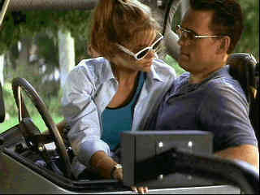

| Wild
Things(SE)/C+,A |
| Columbia-Tristar/1998/108m/ANA,WS
2.35,PS 1.33 |
Blue Bay’s posh beach community is
about to capsize under the weight of an improbable rape scandal. Beautiful socialite heiress Kelly
Van Horn accuses her high school guidance counselor Sam Lombardo of rape. The very popular
Lombardo may be an unlikely suspect, but accusation is close enough to conviction in this blue
blood community.
|

|
|
It's the old Blue Bay Jeep come-on.©Universal
|
You know that director John McNaughton is
having fun with the plot gyrations and character turns. The biggest hurdle for Wild Things
is straddling the line between a comic vision and a clever thriller. It's not funny enough and it's
a mite too clever for its own success. The actors clearly have a grand time performing under
McNaughton's guidance in the lush coastal settings. Matt Dillon is effective as Sam Lombardo, yet
there are times when he seems unsure of what direction the character should be heading. The pretty
ladies are more consistent in their approach to Wild Things. Both Denise Richards and Neve
Campbell manage to be appealing and appalling at the same time. Kevin Bacon rounds out the main
players performing a unique Blue Bay dance. And Bill Murray is on hand with a broad performance as
shyster ambulance chaser Ken Bowden. Murray almost seems like he's playing in a different movie and
in some ways is the chief clue to director McNaughton's real objectives in Wild Things.
The somewhat sleazy and suggestive score by George S. Clinton is
very effective, echoing the sexual gyrations of the characters. The camera work is outstanding,
creating bright and slutty images to coordinate with the shady shenanigans.
Wild Things is a great looking DVD. Intense tropical colors are
complimented by perfectly balanced dark, steamy nights. The DVD captures every essence of evil
reflected in the eyes of its players with ease. There's no evidence of undue image
enhancement. The soundtrack is terrific. The music pushes air with push to spare. Sonic ambiance is
recreated beautifully on the Dolby Digital 5:1 surround sound. And this is a special edition to
boot, featuring a commentary by director John McNaughton and some deleted scenes. Man, catch that
missing finger in the alligator's jaw. Ugh!
|
|
 
DVDPlanet is the DVD
incarnation of legendary laser retailer Ken Crane's. Deep discounts and serious service.
 Direct from the corridors of the Home Theater Forum, Home Theater Talk is the
newest place on the Net to discuss everything home theater. Friendly atmosphere and knowledgeable
folks are the secret ingredients. Direct from the corridors of the Home Theater Forum, Home Theater Talk is the
newest place on the Net to discuss everything home theater. Friendly atmosphere and knowledgeable
folks are the secret ingredients.

Selections from the feature archive include articles on Akira Kurosawa,
Frank Darabont, Blonde Bimbos, Hollywood
Street Gangs, or Vietnam:
The Hollywood Pariah, and many more....

Click on the image above for as original view of Akira Kurosawa's work

Catch the Hollywood take on Blonde Bimbos by clicking on the
image above.
Body Parts

Hollywood's long fascination with parts of the body is explored
piece by piece.

Movie
Mags on the Net
Movie magazine have made a full-scale invasion of the Net and online users
are getting big benefits. Boutique publications are competing with the big boys presenting a wealth
of movie information.
|